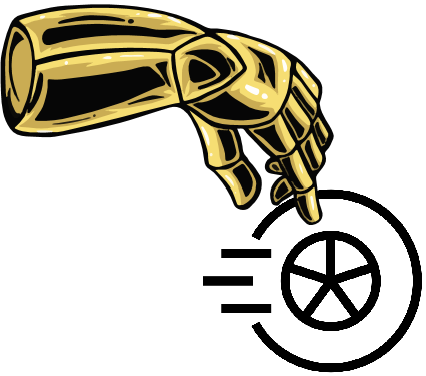

 Robowheel: A Data Engine from Real-World Human Demonstrations for Cross-Embodiment Robotic Learning
Abstract
We introduce Robowheel, a data engine that converts human hand-object interaction (HOI) videos into training-ready supervision for cross-morphology robotic learning. From monocular RGB/RGB-D inputs, we perform high-precision HOI reconstruction and enforce physical plausibility via a reinforcement learning (RL) optimizer that refines hand–object relative poses under contact and penetration constraints. The reconstructed, contact-rich trajectories are then retargeted to cross-embodiments, robot arms with simple end-effectors, dexterous hands, and humanoids, yielding executable actions and rollouts. To scale coverage, we build a simulation-augmented framework on Isaac Sim with diverse domain randomization (embodiments, trajectories, object retrieval, background textures, hand motion mirroring) , which enriches the distributions of trajectories and observations while preserving spatial relationships and physical plausibility. The entire data pipeline forms an end-to-end pipeline from video → reconstruction → retargeting → augmentation → data acquisition. We validate the data on mainstream vision-language-action (VLA) and imitation learning architectures, demonstrating that trajectories produced by our pipeline are as stable as those from teleoperation and yield comparable continual performance gains. To our knowledge, this provides the first quantitative evidence that HOI modalities can serve as effective supervision for robotic learning. Compared with teleoperation, Robowheel is lightweight: a single monocular RGB(D) camera is sufficient to extract a universal, embodiment-agnostic motion representation that could be flexibly retargeted across embodiments. We further assemble a large-scale multimodal dataset combining multi-camera captures, monocular videos, and public HOI corpora for training and evaluating embodied models.
HOI Reconstruction Results
Scalability
Trajectory Augmentation
Object Augmentation
Arm Augmentation
Background Augmentation
BibTeX
@article{YourPaperKey2024,
title={Your Paper Title Here},
author={First Author and Second Author and Third Author},
journal={Conference/Journal Name},
year={2024},
url={https://your-domain.com/your-project-page}
}